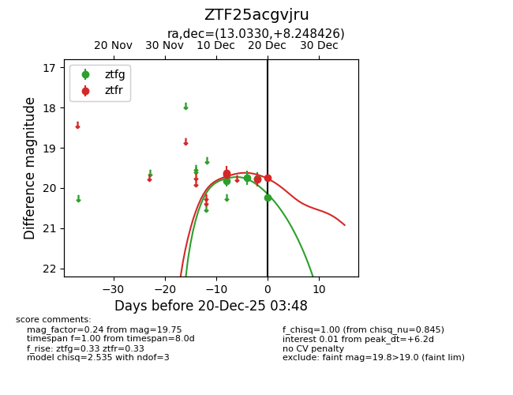
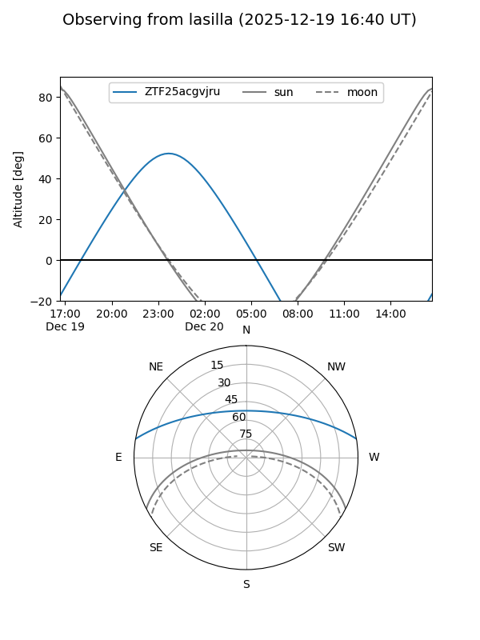
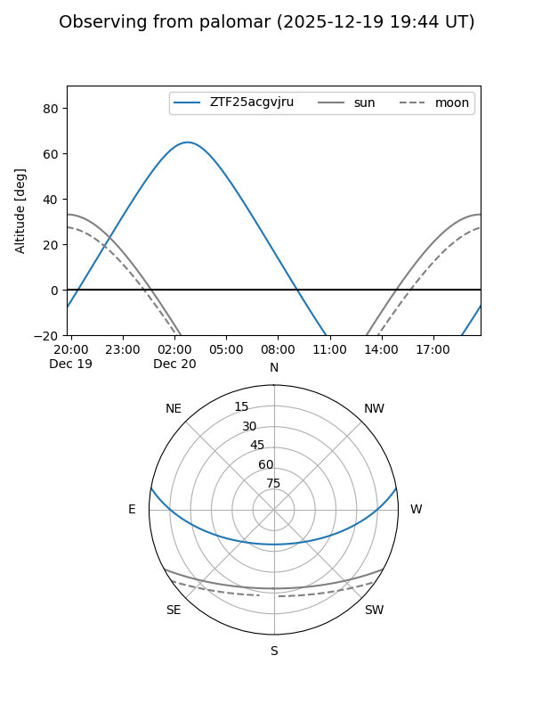
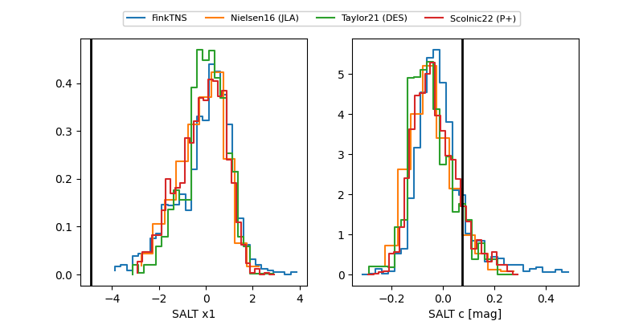

ZTF25acgvjru
Target ZTF25acgvjru at 2025-12-20 03:49
Aliases and brokers:
FINK: fink-portal.org/ZTF25acgvjru
Lasair: lasair-ztf.lsst.ac.uk/objects/ZTF25acgvjru
ALeRCE: alerce.online/object/ZTF25acgvjru
alt names
ZTF25acgvjru (ztf,fink_ztf)
Coordinates:
equatorial (ra, dec) = 13.0330,+8.24843
equatorial (HMS+DMS) = 00:52:07.92,+08:14:54.33
galactic (l, b) = (123.2286,-54.62292)
Flags:
Photometry:
last ztfg=20.24, ztfr=19.75
4 ztfg, 4 ztfr detections
Lightcurve

Visibility


Additional plots
